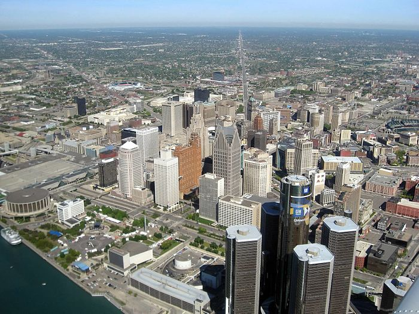

Yohannes Teshome
The State of Michigan
The state of Michigan resembles the shape of a mitten, surrounded by 4 major fresh water great lakes. It is devided in two peninsulas connected by the Mackinac Bridge which is a suspension bridge spanning the Straits of Mackinac to connect the Upper and Lower Peninsulas. The Mackinac Bridge is currently the fifth longest suspension bridge in the world. In 1998, the Akashi Kaikyo Bridge in Japan became the longest with a total suspension of 12,826 feet. The Mackinac Bridge is the longest suspension bridge in the western hemisphere.
The total length of the Mackinac Bridge is 26,372 feet. The length of the suspension bridge (including anchorages) is 8,614 feet. The length from cable bent pier to cable bent pier is 7,400 feet. Length of main span (between towers) is 3,800 feet. The width of the roadway is 54 feet. The height of the roadway at mid-span is approximately 200 feet above water level. The vertical clearance at normal temperature is 155 feet at the center of the main suspension span and 135 feet at the boundaries of the 3,000 ft. navigation channel.
Some other fun facts about the construction of the Mackinac Bridge
- 89,000 blueprints and structural drawings were made
- 71,300 tons of structural steel
- 931,000 tons of concrete
- 42,000 miles of cable wire
- 4,851,700 steel rivets
- 1,016,600 steel bolts
- 350 engineers
- 522 feet tall
- 1,024,500 tons in total weight
- 7,500 men and women that worked in quarries, shops, mills
- 1951 Chevrolet Styleine Deluxe owned by Albert Carter was the first car to cross the Mackinac Bridge
Source: www.mackinacbridge.org
Detroit, Michigan